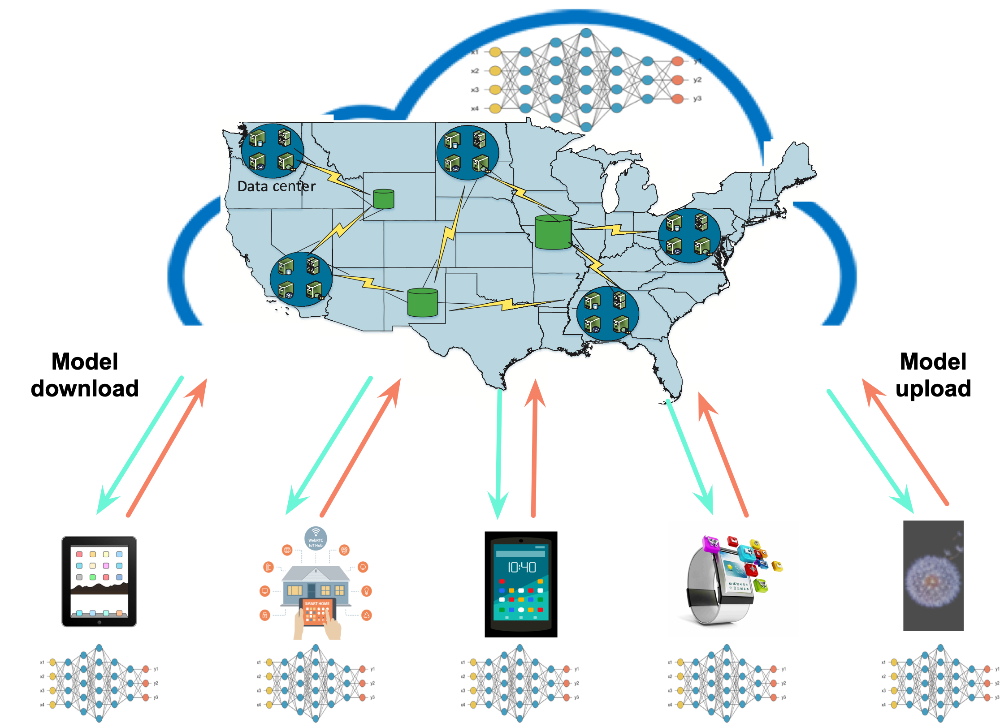
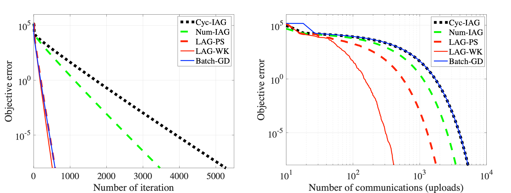
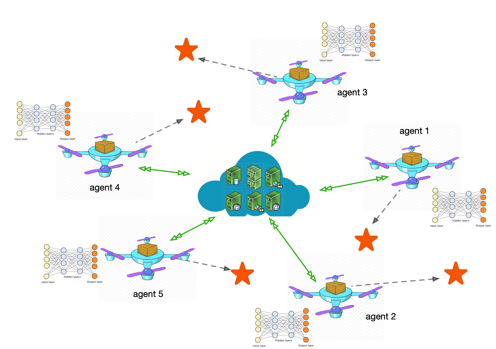
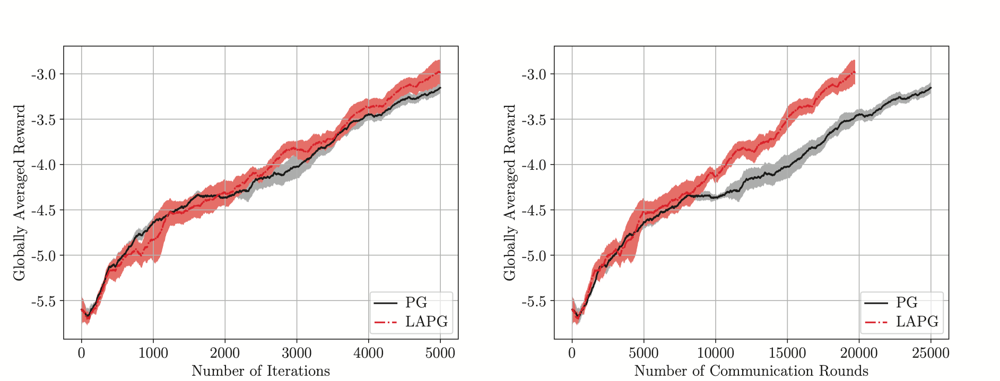
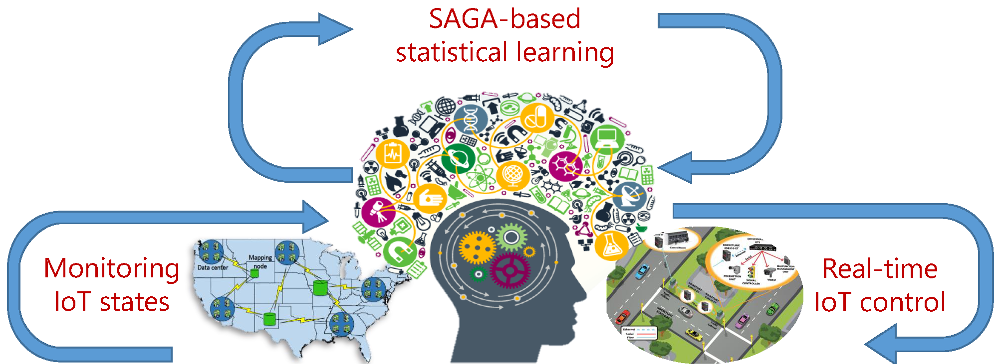
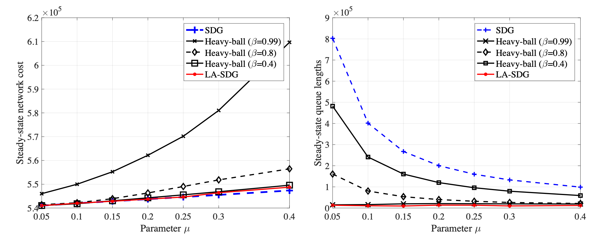
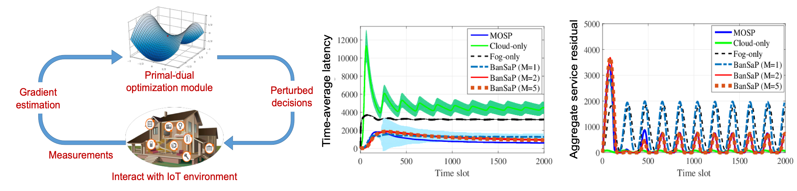
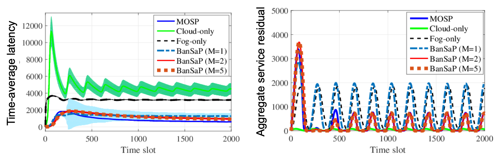

The past decade has witnessed a proliferation of connected devices and objects, where the notion of Internet-of-Things (IoT) plays a central role in the envisioned technological advances. Conceptually speaking, IoT foresees an intelligent system with ubiquitous smart devices. Today, a number of IoT applications have already brought major benefits to many aspects of our daily life. At the same time, the proliferation of machine learning advances motivates a systematic way to uncover hidden insights through learning from historical relationships and trends in massive datasets. Integration of data analytics into future system design holds the key to exploiting the potential of IoT. In this context, I work at the intersection of optimization, machine learning, and networked systems. My background is in optimization, statistical signal processing, machine learning, and wireless communications. My current research focuses on building fundamental connections between methodologies from the optimization, machine learning and networking communities, and developing inter-disciplinary approaches for networked systems such as the emerging IoT paradigm.
My research has contributed answers to the following two intertwined questions.
(Q1): How can we scale up machine learning approaches for efficient IoT implementation?
(Q2): How learning advances can be leveraged to enhance resource allocation policies for IoT?
The overarching objective of my research is to wed state-of-the-art optimization and machine learning tools with the emerging IoT paradigm, in a way that they can inspire and reinforce the development of each other, with the ultimate goal of benefiting our daily life.
In the pursuit of the research goals, my research can be summarized into two major areas.
Scale Up Machine Learning Approaches for IoT
It is estimated that by 2020, there will be more than 50 billion devices connected through the Internet. To tackle (Q1), it is evident that scalability and heterogeneity are two key challenges for IoT. Scalability is not only about computational efficiency, but also about communication overhead of running learning algorithms at the network edge; while heterogeneity comes from both the wide range of hardware devices, as well as the diversity of IoT tasks offered by each device. Results in this line of research have also been presented as a part of a tutorial we delivered at MILCOM 2018.
Federated learning at the network edge
Conventional machine learning approaches require centralizing the users’ data in a remote data center, which is known as cloud computing. In cloud computing, users’ data from the devices, such as mobile phones, are transferred to the data centers which execute learning algorithms on CPU and GPU clusters. The extracted information is then transferred back to users’ devices. Considering the massive amount of IoT devices, centralized learning becomes computationally intractable, and rises serious privacy concerns. To date, the widespread consensus is that besides data centers at the cloud, future machine learning tasks have to be performed starting from the network edge, namely mobile devices. This is the overarching goal of edge computing, also known as federated learning. Towards this goal, my research efforts are centered on reducing the communication overhead during the federated learning processes, and enhancing the robustness of learning under adversarial (a.k.a. Byzantine) attacks. Relevant results have been published in top machine learning venues (NeurIPS 2018 and AAAI 2019). It is worth mentioning that our learning methods (LAG-WK and LAG-PS) with adaptive communication mechanism have been selected as the spotlight presentation in NeurIPS, which establishe a provably reduced communication complexity in federated learning. Challenges of distributed learning also lie in asynchrony and delay introduced by e.g., IoT mobility and heterogeneity. In this context, we have developed algorithms for delayed online learning that can be run asynchronously on edge devices; see our recent submission to AISTATS.|   |
Related publications:
T. Chen, G. Giannakis, T. Sun and W. Yin, ‘‘LAG: Lazily Aggregated Gradient for Communication-Efficient Distributed Learning,’’ Proc. of Neural Information Processing Systems (NeurIPS), Montreal, Canada, December 3-8, 2018. (Spotlight talk and poster)
L. Li, W. Xu, T. Chen, G. Giannakis, and Q. Ling, ‘‘RSA: Byzantine-Robust Stochastic Aggregation Methods for Distributed Learning from Heterogeneous Datasets,’’ Proc. of the Assoc. for the Advanc. of Artificial Intelligence (AAAI), Honolulu, Hawai, January 27-February 1, 2019. (Oral presentation)
B. Li, T. Chen, and G. Giannakis, ‘‘Bandit Online Learning with Unknown Delays,'' Proc. of Intl. Conf. on Artificial Intell. and Stat. (AISTATS), Naha, Japan, April 2019.
Federated reinforcement learning over networked agents
From learning to control, reinforcement learning (RL) will play a critical role in many complex IoT tasks. Popular RL algorithms are originally developed for the single-agent tasks, but a number of IoT tasks such as autonomous vehicles, coordination of unmanned aerial vehicles (UAV), involve multiple agents operating in a distributed fashion. Today, a group of coordinated UAVs can perform traffic control, food delivery, rescue and search tasks. To coordinate agents distributed over a network however, information exchange is necessary, which requires frequent communication among agents. For resource-limited devices (e.g., battery-powered UAVs), communication is costly and the latency caused by frequent communication becomes the bottleneck of overall performance. In this context, we have studied the distributed RL (DRL) problem that covers multi-agent collaborative RL and parallel RL. Generalizing our theory and algorithms for supervised learning, we have developed an exciting communication-efficient algorithm (LAPG) for DRL, which builds on the policy gradient (PG) method. Remarkabley, our new method can achieve the same order of convergence rates as vanilla policy gradient under standard conditions; and, ii) reduce the communication rounds required to achieve a targeted learning accuracy, when the distributed agents are heterogeneous.
|   |
Related publications:
T. Chen, K. Zhang, G. B. Giannakis, and T. Başar, ‘‘Communication-Efficient Distributed Reinforcement Learning,’’ Submitted to Journal of Machine Learning Research, December 2018.
Scalable function approximation with unknown dynamics
Function approximation emerges at the core of machine learning tasks such as regression, classification, dimensionality reduction, as well as reinforcement learning. Kernel methods exhibit well-documented performance in function approximation. However, the major challenges of implementing existing methods to IoT come from two sources: i) the “curse” of dimensionality in kernel-based learning; and, ii) the need to track time-varying functions with unknown dynamics. In this context, we have developed a scalable multi-kernel learning scheme to obtain the sought nonlinear learning function ‘on the fly.’ To further boost performance in unknown environments, we also developed an adaptive learning scheme, which accounts for the unknown dynamics. So far, results in this direction have appeared in the top artificial intelligence (AI) venue AISTATS and the flagship journal JMLR. Our scalable algorithm is uniquely capable of tracking learning functions in IoT environments with unknown dynamics, and with analytical as well as empirical performance guarantees.Related publications:
Y. Shen*, T. Chen*, and G. B. Giannakis, ‘‘Online Ensemble Multi-Kernel Learning Adaptive to Nonstationary and Adversarial Environments,’’ Proc. of Intl. Conf. on Artificial Intell. and Stat. (AISTATS), Lanzarote, Canary Islands, April 2018. (equal contribution)
Y. Shen, T. Chen, and G. B. Giannakis, ‘‘Random Feature-Based Online Multi-Kernel Learning in Environments with Unknown Dynamics'' Journal of Machine Learning Research, conditional accepted, October 2018.
Rethink Resource Management for IoT via Machine Learning
Optimally allocating limited computing and communication resources is a crucial task in resource-limited IoT environments. To tackle (Q2), I have provided affirmative answers to the following intermediate questions:
i) can we learn from historical data to improve the existing resource management schemes; and,
ii) can we develop resource management schemes when the underlying models are not known?
The key novelty here is innovative statistical and interactive learning tailored for resource management tasks in IoT. Results in this direction have been disseminated as part of a tutorial we co-presented at GLOBECOM 2018, and summarized in our overview paper.
T. Chen, S. Barbarossa, X. Wang, G. Giannakis and Z.-L. Zhang, ‘‘Learning and Management for Internet-of-Things: Accounting for Adaptivity and Scalability,’’ Proceedings of the IEEE, to appear, 2018.
Statistical learning viewpoint of resource management
To date, most resource management schemes for IoT are based on a pure optimization viewpoint (e.g., the dual (sub)gradient method), which incur large queueing delays and slow convergence. From the vantage point of IoT, our fresh idea is to leverage the abundant historical data collected by devices, and formulate the resource management problem as an empirical risk minimization (ERM) — a central topic of statistical machine learning research. In this context, we have developed a fast convergent algorithm. By cross-fertilizing advances of learning theory, we have also established the sample complexity of learning a near-optimal resource management policy. To boost performance in dynamic settings, we further introduced a learn-and-adapt resource management framework (LA-SDG), which capitalizes on the following features: (f1) it learns from historical data using advanced statistical learning tools; and, (f2) it efficiently adapts to IoT dynamics, and thus enables operational flexibility. Our proposed algorithms have been published in top signal processing and network optimization journals, where we have analytically shown that this novel algorithmic design can provably improve the emerging performance tradeoff by an order of magnitude. Preliminary results in this direction have also played a key role in helping our group receive the NSF CCSS grant. To demonstrate the impact of this work, we have applied it to mobile computing and smart grid tasks.|   |
Recent publications:
T. Chen, A. Mokhtari, X. Wang, A. Ribeiro and G. Giannakis, ‘‘Stochastic Averaging for Constrained Optimization with Application to Online Resource Allocation,’’ IEEE Transactions on Signal Processing, vol. 65, no. 12, pp. 3078-3093, Jun. 2017.
T. Chen, Q. Ling and G. Giannakis, ‘‘Learn-and-Adapt Stochastic Dual Gradients for Network Resource Allocation,’’IEEE Transactions on Control of Network Systems, vol. 5, no. 4, pp. 1941-1951, December 2018.
B. Li, T. Chen, X. Wang and G. Giannakis, ‘‘Real-time Optimal Energy Management with Reduced Battery Capacity Requirements,’’ IEEE Transactions on Smart Grid, to appear 2019.
X. Chen, W. Ni, T. Chen, I. Collins, X. Wang and G. Giannakis, ‘‘Multi-Timescale Optimization of Network Function Virtualization for Service Chaining,’’ IEEE Transactions on Mobile Computing, to appear 2019.
Model-free interactive management for edge computing
Typically, solving resource allocation problems necessitates knowledge of the models that map a resource allocation decision to its cost or utility; e.g., the model that maps transmit-power to the bit rate in communication systems. However, such models may not be available in IoT, because i) the utility function capturing e.g., service latency or reliability in edge computing, can be hard to model; and, ii) even if modeling is possible, IoT devices with limited resources may not afford the complexity of running sophisticated inference algorithms. Hence, another important ingredient of my research is to account for the feedback limited nature of resource allocation tasks in IoT. To account for physical constraints, we have considerably generalized the interactive learning tools for unconstrained problems to solve challenging constrained resource allocation problems. Tailored for edge computing scenarios, we further developed a class of model-free online learning schemes. Our new algorithms (BanSaP) come with provable performance guarantees, even when knowledge about the underlying system models can be obtained only through repeated interactions with the environment. Results in this direction were among the top 10 nominated for the best paper award in the 2017 IEEE Asilomar conference.|   |
Related publications:
T. Chen, Q. Ling and G. Giannakis, ‘‘An Online Convex Optimization Approach to Proactive Network Resource Allocation,’’ IEEE Transactions on Signal Processing, vol. 65, no. 24, pp. 6350-6364, Dec. 2017.
T. Chen, Q. Ling, Y. Shen and G. Giannakis, ‘‘Heterogeneous Online Learning for Thing-Adaptive Low-Latency Fog Computing in IoT,’’ IEEE Internet of Things Journal, to appear 2018.
- T. Chen and G. Giannakis, ‘‘Bandit Convex Optimization for Scalable and Dynamic IoT Management,’’ IEEE Internet of Things Journal, to appear 2018.
Stochastic optimization for networked cyber-physical systems
Cyber-physical systems (CPS) are systems in which communication, computation, and control are tightly coupled and interacting with the physical world. The complexity of CPS grows when a group of task-specific systems pool their resources and capabilities together to create a networked system offering more advanced functionality. A system of systems in this type is referred to a networked CPS. In order to properly manage networked CPS, most existing approaches assume that a CPS operator can obtain perfect (future) information of CPS all times, which requires perfect computation/communication/sensing from each subsystem. Leveraging stochastic optimization toolboxes, we have tackled online resource management problems (in different forms) for data centers, smart grids, and renewable-enabled next-generation communication systems, where the perfect information about the underlying systems is not available.
Related publications:
T. Chen, X. Wang and G. Giannakis, ‘‘Cooling-Aware Energy and Workload Management in Data Centers via Stochastic Optimization,’’ IEEE Journal on Special Topics in Signal Processing, Vol. 10, No. 2, pp. 402-415, Mar. 2016.
T. Chen, Y. Zhang X. Wang, and G. Giannakis, ‘‘Robust Workload and Energy Management for Sustainable Data Centers,’’ IEEE Journal on Selected Areas in Communications, Vol. 34, No. 3, pp. 651-664, Mar. 2016.
- T. Chen, A. Marques and G. Giannakis, ‘‘DGLB: Distributed Stochastic Geographical Load Balancing over Cloud Networks,’’ IEEE Transactions on Parallel and Distributed Systems, vol. 28, no. 7, pp. 1866-1880, July 2017.
X. Wang, T. Chen, X. Chen, X. Zhou and G. Giannakis, ‘‘Dynamic Resource Allocation for Smart-Grid Powered MIMO Downlink Transmissions,’’ IEEE Journal on Selected Areas in Communications, Vol. 34, No. 12, pp. 3354 - 3365, Dec. 2016.